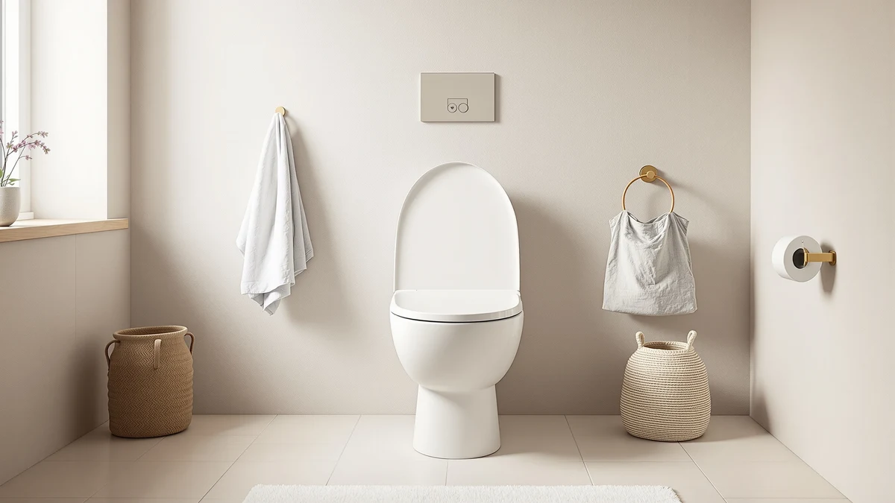

Best Toilet Seats for Easy Cleaning: Complete Guide (2026)
Prices and picks verified as of August 2026. Independent, reader-supported reviews.


Things to Know Before You Buy
- Plastic beats vinyl for wipe-down speed. Molded polypropylene has no seams for grime to hide in, while padded vinyl covers trap moisture at the stitching.
- Quick-release hinges matter more than the seat material. A seat that lifts off the bowl in seconds lets you clean the hinge area and the bowl rim properly, something a bolted-on seat never allows.
- Glossy, non-porous finishes resist staining. Textured or matte plastics look nice in photos but hold onto hard-water spots and cleaning-product residue longer.
- Color hides less than white. White shows every water spot immediately, which sounds like a downside but actually forces more consistent cleaning habits.
- Soft-close lids reduce chipping. A lid that slams repeatedly can crack the finish at the hinge, and a chipped edge becomes a permanent grime trap.
The best toilet seats for easy cleaning share a short list of traits: a smooth, seamless surface, hinges you can release without a wrench, and a finish that shrugs off hard-water spots instead of holding onto them. Most shoppers assume any new seat is an upgrade over what they have, but a seat with hidden bolt covers, a matte finish, or a padded vinyl top can end up harder to keep clean than the one it replaced.
You do not need to buy the most expensive seat in the store to solve this. A twenty-dollar molded plastic seat with quick-release hinges will outperform a fifty-dollar padded seat every time you reach for a cleaning cloth, because the material and the mounting hardware do more work than the price tag. This guide walks through the materials, hinge types, and daily habits that separate a seat you wipe down in ten seconds from one you scrub on your knees.
Below, you will find the specific features to check before you buy, the mistakes that quietly undo a good purchase, and a short list of picks that cover different budgets and bowl shapes. Read the buying criteria first if you have never replaced a toilet seat, or jump to Our Top Picks if you already know what you are looking for.
What You Need to Know
Two things determine how easy a toilet seat is to keep clean: the surface material and where the seams sit. Molded plastic seats, whether polypropylene or thermoset resin, are cast as a single piece with no fabric, no foam, and no stitched seams. Wipe one down with a disinfecting cloth and you are done. Padded vinyl seats look softer and feel warmer, but the vinyl is stretched over foam and stitched or glued at the edges, and moisture works into those seams over months of use.
Hinges are the second factor, and they're the part people forget to check before buying. Standard bolt-down hinges keep the seat fixed to the bowl, which means you clean around the hinge posts instead of lifting the seat away from them. Quick-release hinges use a tab or a lever that lets the entire seat come off the bowl in seconds, so you can wipe the underside, the hinge posts, and the bowl rim in one pass instead of working blind.
Finish matters too. A glossy, non-porous coating resists hard-water spotting and cleaning-product residue far better than a matte or textured surface, which holds onto both. When we researched owner feedback across dozens of listings, the seats people rated highest for cleaning ease were glossy, seamless, and equipped with a release mechanism, not the ones with the most premium marketing copy. Keep those three factors, material, hinge type, and finish, in mind before you compare specific models.
Types and Categories
Molded plastic seats are the baseline category, and for anyone shopping specifically for the best toilet seats for easy cleaning, they are the starting point. Polypropylene versions run cheapest and resist chipping, while thermoset resin costs more and holds a glossier shine over years of use. Both wipe clean in one pass because there is no padding or fabric involved.
Padded vinyl seats trade cleaning ease for comfort. The foam layer under the vinyl cover softens contact for anyone who sits for extended periods, and the surface itself wipes down fine. The tradeoff shows up at the seams, where stitching or a glued edge can trap moisture and eventually darken or peel if it is not dried after cleaning.
Soft-close seats are a mounting feature rather than a material category, available on both plastic and padded models. The hinge mechanism lowers the lid gently instead of letting it slam, which protects the finish from hairline cracks that collect grime over time. Most soft-close seats also use quick-release hinges, since manufacturers tend to bundle premium hardware together.
Quick-release or "easy clean" seats are marketed specifically around removability. A tab, lever, or button disengages the hinge so the whole seat lifts free of the bowl. This category overlaps heavily with plastic seats, since manufacturers rarely bother adding a release mechanism to a padded model that already resists easy wiping. Bariatric and elongated variants exist within every category above and only change the sizing, not the cleaning characteristics.
How to Choose
Start by measuring your bowl. Elongated bowls run about 18.5 inches from the mounting bolts to the front edge, and round bowls run closer to 16.5 inches. A seat sized wrong will overhang or leave a gap, and either mistake creates a spot dirt collects along the edge. This single measurement narrows most catalogs down to a handful of compatible options before you even think about cleaning features.
Once size is settled, check the hinge type in the product listing or specs rather than relying on the photos. Look for language like "quick-release," "lift-off," or "easy clean hinge." If the listing does not mention removability, assume it is a standard bolt-down hinge and plan to clean around it rather than lifting it away.
Compare finish descriptions next. Owners searching for the best toilet seats for easy cleaning tend to favor glossy plastic or enamel-coated finishes over textured or matte options. A glossy surface sheds hard-water spots with a dry cloth; a matte one usually needs a cleaning product to look presentable.
Weigh comfort against cleaning ease before you decide. If you or a household member needs cushioning for medical reasons, a padded seat is worth the extra maintenance. If comfort is a preference rather than a requirement, a molded plastic seat with a contoured shape gets most people ninety percent of the comfort with none of the seam maintenance.
Finally, factor in installation. A seat with quick-attach, tool-free hardware is easier to reinstall correctly after a deep clean than one that requires a screwdriver and a flashlight aimed under the bowl. Seats that misalign after cleaning tend to develop gaps at the hinge that collect grime faster than a properly seated one.
Common Mistakes to Avoid
Shoppers chasing the best toilet seats for easy cleaning often pick a seat based on color or price alone and skip the hinge specs entirely. A seat that looks identical to a quick-release model in photos can still be bolted down permanently, and you will not find out until you try to lift it during a deep clean.
Using abrasive cleaners on glossy plastic is another frequent error. Scouring pads and harsh powders dull the finish over months, and once the gloss is gone, the surface holds onto residue the way a matte finish always did. A soft cloth with a standard bathroom cleaner keeps the shine intact for years.
Owners also skip drying the hinge area after cleaning. Vinyl seams and hinge posts that stay damp are where mildew starts, and it shows up as dark spots long before the rest of the seat looks dirty. A quick pass with a dry towel after wiping down prevents most of that.
Overtightening mounting bolts causes cracking at the base, which then traps grime in the crack line permanently. Hand-tight plus a quarter turn with a screwdriver is enough for nearly every seat on the market. Finally, some buyers replace a seat without checking whether the new hinge posts match their existing bolt spacing, which leads to a wobbly seat that develops gaps and dirt traps within weeks.
Care and Maintenance
Even the best toilet seats for easy cleaning need a routine to stay that way. Wipe the top, underside, and hinge area with a disinfecting cloth two to three times a week, and release the seat from the bowl once a month if it has quick-release hardware. That monthly lift-off catches buildup around the hinge posts that a surface wipe never reaches.
Stick to mild dish soap or a standard bathroom spray for routine cleaning. Bleach-based cleaners work for occasional deep disinfecting but degrade plastic and vinyl faster with repeated use, so reserve them for once every few weeks rather than daily wiping. Rinse and dry the seat after a bleach application to keep residue from building up in the hinge gap.
For padded vinyl seats, check the seam line monthly for lifting or discoloration. Catching a loose seam early means you can reseal or replace the seat before moisture gets into the foam padding underneath, which is not something you can clean out once it happens. For plastic seats, a light coat of car wax applied twice a year adds a water-repellent layer that makes routine wiping faster.
Tighten mounting bolts by hand every few months, since regular use loosens them gradually. A seat that shifts even slightly opens a gap at the hinge where dirt and moisture collect, undoing the cleaning advantage of whatever material you chose in the first place.
Our Top Picks
These three picks cover the main sizing and color needs most shoppers land on. Each uses a seamless vinyl cover over foam padding rather than fabric, so the wipe-down routine stays the same across all three; the differences come down to bowl shape and finish.

Editor's Pick
Soft Elongated Vinyl Toilet Seat
A 19-inch elongated seat with a wipeable vinyl cover and foam cushioning. The single-piece surface handles daily wiping fine, but check the seam line monthly since padded seats need more attention there than solid plastic.
$24.20
Check Price on Amazon
Best Value
Soft Standard Vinyl Toilet Seat
A 17-inch standard seat in navy that hides water spots better than white while keeping the same wipeable vinyl surface. Good for a budget bathroom refresh where color matters more than a glossy shine.
$21.25
Check Price on Amazon
Premium Choice
Soft Standard Vinyl Toilet Seat
The same 17-inch standard build in a soft tea-rose tone for buyers who want a lighter accent color. Wipes clean the same way as the other two; the tradeoff is the vinyl seam versus a molded plastic seat.
$21.28
Check Price on AmazonFrequently Asked Questions
What material is easiest to clean on a toilet seat?
Molded plastic, either polypropylene or thermoset resin, is the easiest to clean because it has no seams, stitching, or foam to trap moisture. A glossy finish wipes clean in one pass, while padded vinyl requires more attention at the seam where the cover meets the underside.
Are quick-release toilet seats worth it?
Yes, for cleaning purposes specifically. A quick-release hinge lets you lift the entire seat off the bowl in seconds, which gives you access to the hinge posts and bowl rim that a bolted-down seat never exposes. It's the feature owners mention most often when they explain why their toilet stays easier to clean.
How often should I clean the toilet seat hinges?
Wipe the visible hinge area two to three times a week along with the rest of the seat. If the hardware releases without tools, lift it fully off the bowl once a month to clean the hinge posts and the bowl rim behind them.
Do padded toilet seats get moldy?
They can, if the seam where the vinyl cover meets the base stays damp. Checking that seam monthly and drying it after cleaning prevents most moisture buildup. Owners who skip that step are the ones who report dark spots or peeling at the seam after a year or two.
Does a glossy or matte finish clean better?
Glossy finishes clean faster because they are non-porous and shed hard-water spots with a dry cloth. Matte and textured finishes look understated but hold onto cleaning-product residue and water spots longer, which means more scrubbing over time.
Verdict
Finding the best toilet seats for easy cleaning comes down to three checks before you buy: a seamless surface, a hinge that releases without tools, and a glossy finish that resists hard-water spotting. Skip any one of those and you end up with a seat that looks new in photos but fights you every time you clean the bathroom. Our Editor's Pick, the ACHIM Fantasia elongated seat, covers the sizing most households need with a wipeable surface that keeps the routine simple, and the Best Value and Premium Choice options give you the same cleaning profile in different colors and bowl shapes. Measure your bowl, confirm the hinge type in the listing, and prioritize finish over padding if easy cleaning is your main goal.